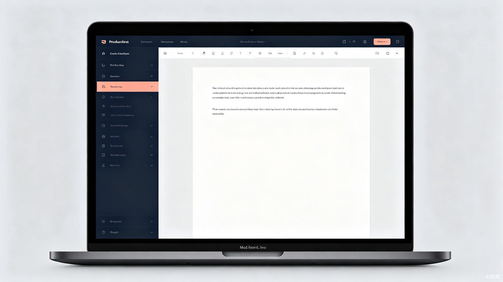

雷云文档
产品助理
2026.03 – 2026.05
独立完成在线协作文档产品的设计，涵盖文档管理、在线编辑、用户系统等核心功能模块。

项目概述
雷云文档是一款在线协作文档编辑平台，旨在为用户提供便捷、高效的文档创建与管理体验。作为产品助理，我独立负责了该产品从需求分析到原型设计的全流程工作。
置顶 / 取消置顶
收藏 / 取消收藏
文字等级
文字颜色与背景颜色
登录 / 注册 / 退出
文档管理
在线编辑
文档导出
用户间交流
负责模块
原型设计
负责文档功能原型图绘制（收藏、置顶、登录等），并设计用户使用时的进程状态与异常状态
PRD 撰写
独立完成产品PRD的书写及各功能流程图的绘制
竞品分析
主导两款竞品（百度文库、钉钉文档）的深度分析
文档输出
完成用户手册、竞品分析等核心文档编写
项目成果
- 掌握 Axure 工具的使用
- 养成并巩固逻辑思维与结构化思维
- 熟悉 PRD、流程图与原型图的绘制
- 掌握功能从设计到使用入口再到异常状态设计的完整流程
- 熟悉产品的框架设计流程